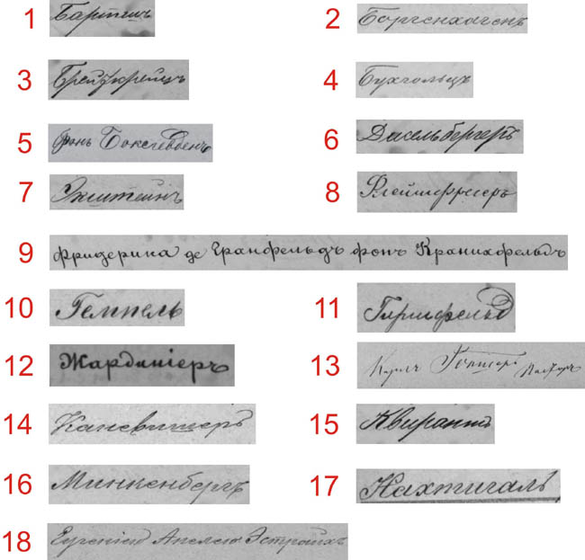
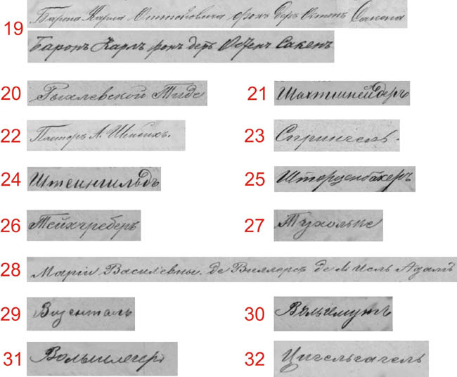

If you are bold enough to attempt this quiz you already know the challenges the scribe faced in writing non-Russian names using Cyrillic characters. Translating this phonetic code back to the original name is the obstacle we are now faced with in reading these records. The level of difficulty for these names is much higher than those in the other quizzes. Several of the examples provided here would prove to be rather challenging to a native Russian speaker because of this conversion of non-Russian names. The similarities of how several letters are written compounds the difficulty with this translation as you will see in these examples. Most names here are of German origin but none are derived from eastern European roots. To make your job a little easier, the names are listed alphabetically by surname according to our alphabet.
Two separate panels of the quiz are given with their own answer keys.
QUIZ #1:

Answers are on the next page.
QUIZ #2:

Answers are on the next page.